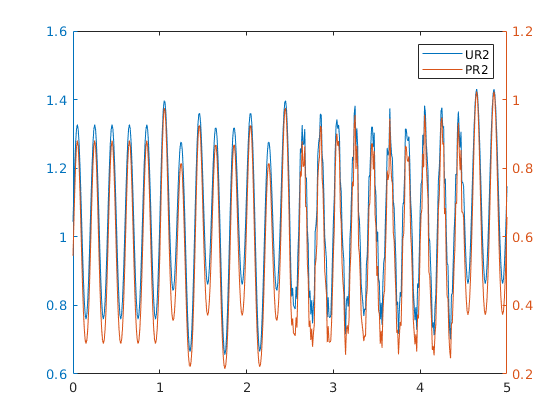
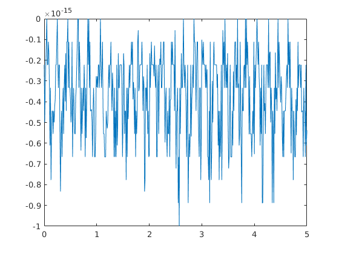

4.laboratorijas darbs
Contents
Konstantins.Glaskovs
R1=1;R2=2;R3=3;R4=4;R5=5;R6=6;R7=7;R8=8;
R = [R1+R2+R3 -R2 0;
-R2 R2+R4+R5 -R5;
0 -R5 R6+R5+R7];
%
t=0:0.01:5;
E1=sin(2*pi*5*t);
E2 = 7+zeros(size(t));
E3 = lab3_demo_fun(t);
E = [E1; -E2; -E3];
I = R\E;
% IR1 - ?
IR1 = I(1,:);
IR3 = I(1,:);
IR2 = I(1,:)-I(2,:);
UR2=IR2*R2;
PR2=UR2.*IR2;
plotyy(t,UR2,t,PR2);
legend('UR2','PR2')
% Parbaude pec KIRHOFA LIKUMA
% UR1+R2+R3=E1
IR1=I(1,:);
UR1 = IR1*R1;
IR3 = I(1,:);
UR3 = IR3*R3;
Utst = UR1+UR2+UR3-E1;
figure,plot(t,Utst)
  Secinajumi:
Ar matlab programaturu var atrisinat uzdevumus ETP,un uzzimet grafikus, kuri rada spriegumu no laika un jaudu no laika. Ka ari var parbaudit rezultatus ar kirhofa sprieguma likumu. Matlab lauj atri un vienkarsi visus vajadzigus lielumus.